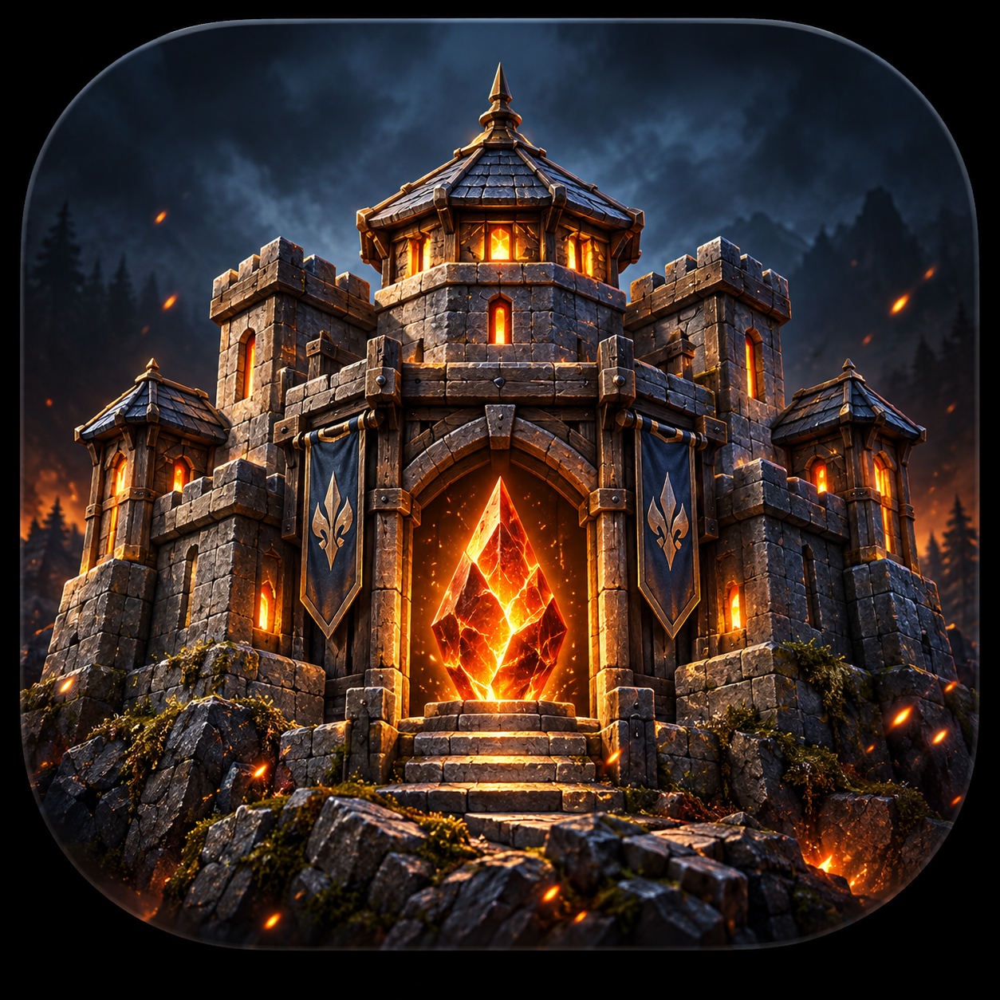
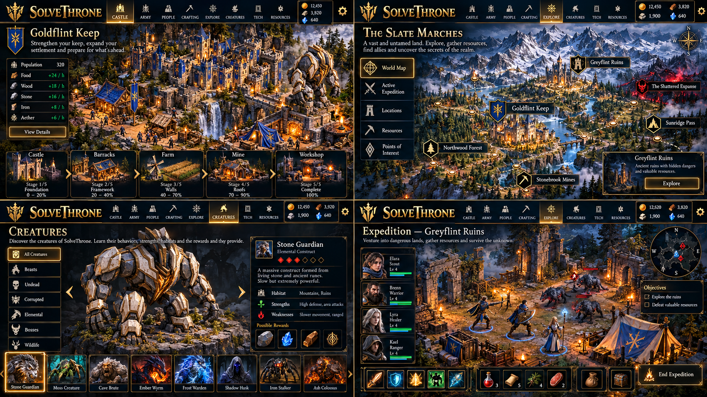
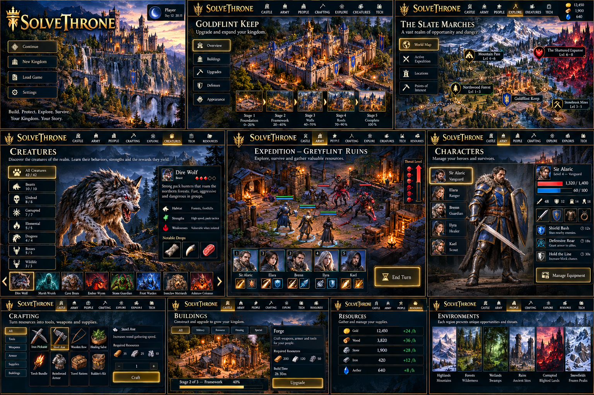
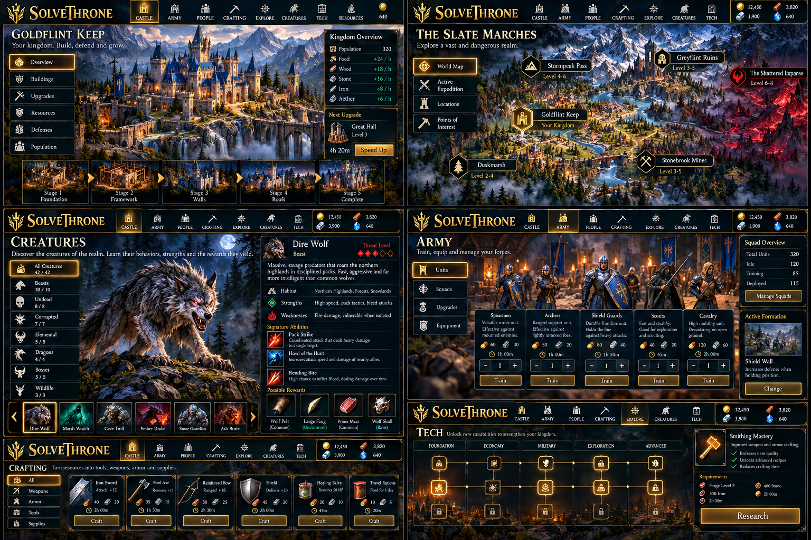
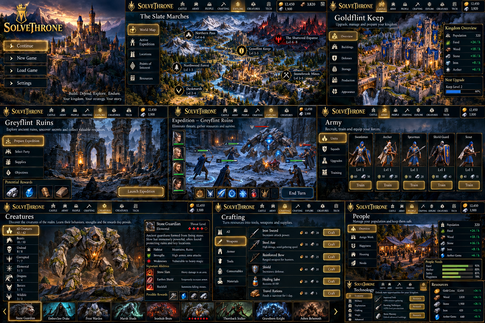
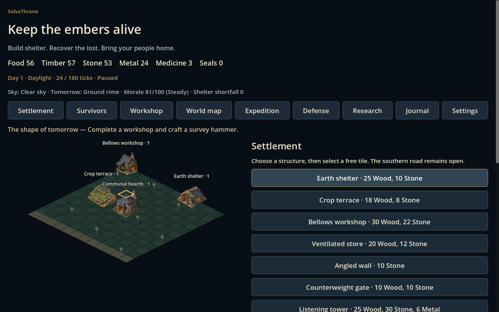
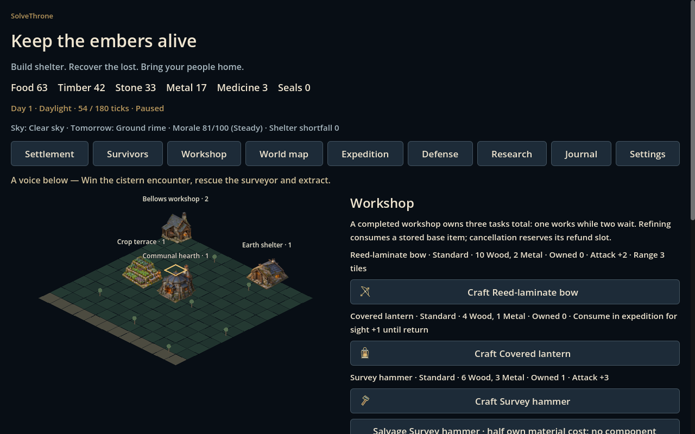
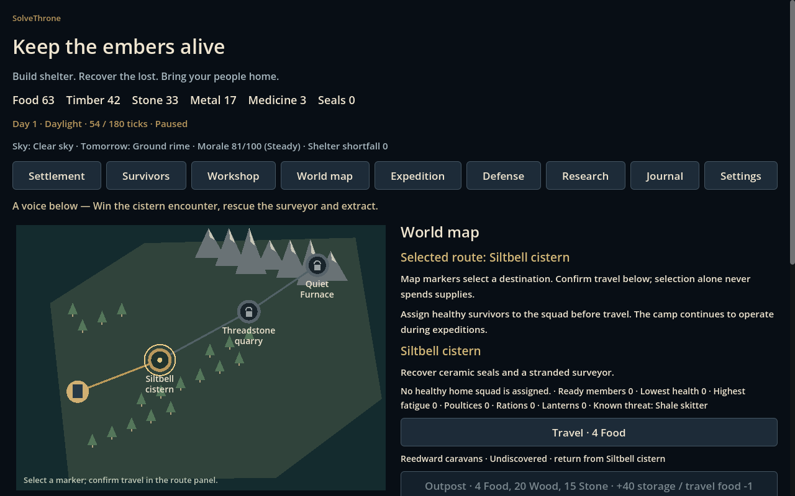
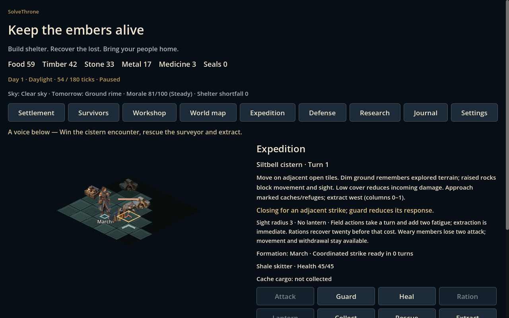

Give your survivors a home.
Place shelters, terraces, workshops and defenses. Assign workers, manage materials and keep construction connected to the settlement road.

In DevelopmentIn Development · No public game release
An original single-player survival strategy game
Development version 6.0.0 · Build 1
Raise a refuge.
Defend what remains.
Build a fortress in a dark, unsettled world. Keep your people fed, prepare their equipment and lead a squad beyond the walls. Return with supplies before the next night threatens your hearth.
SolveThrone is In Development. Concept artwork illustrates design direction; development screenshots show an earlier local build. No finished game release or store availability is announced.

In Development
Four Concept Mockup boards explore the visual direction. They are not development screenshots, implemented-feature evidence or a playable release.
Concept Mockup — In DevelopmentVisual design studies, not live gameplay.
Explore the visual direction for SolveThrone, The Slate Marches, Goldflint Keep, Greyflint Ruins and Creatures. These are the original design boards. In-image names, characters, unit types, numbers, timers, levels and progress are illustrative, not canonical game specifications or claims of implemented features. Select an image to view its full-resolution original.




Concept artwork illustrates the intended visual direction. Characters, environments and systems may change during development. Public game installation and play remain subject to their separate release requirements.
Implemented Feature · Local development
Place shelters, terraces, workshops and defenses. Assign workers, manage materials and keep construction connected to the settlement road.
Craft tools, bows, armor, medicine and field supplies. Equip actual inventory, refine gear and research protection for your settlement.
Move through tactical encounters, use cover and limited sight, recover supplies and help stranded survivors. Bring the squad home to face warned nighttime incursions.
Development Screenshot · Earlier local build
Captured from an earlier 6.0.0 Build 1 development candidate on Windows, using a fresh settlement and progress earned through game commands. Images are shown as captured; these are separate from the concept mockups above.




The settlement clock was paused for capture. Screenshots show a development scenario, not customer progress, final platform acceptance or a production release.
Platform readiness
Windows, browser and Android development are in scope. Public play and installation links will appear only after the corresponding release is qualified and approved.
Native gameplay and local build checks have run. A public Windows release is not available.
Local gameplay and UI checks have run. A public browser release is not available.
Earlier unsigned development packages passed local integrity checks. The expanded game still requires qualified signing and owner phone acceptance.
The Apple build and device lane has not been qualified. No iOS release or store link is available.
The local development game supports offline settlement building, crafting and expeditions. Recent source-qualified work adds regional encounters, a solo raid and atmospheric fog. These milestones do not establish a finished release.
Player accounts, multiplayer and cross-device profiles remain in development and are not publicly released. Paid commerce and Core integration remain outside the current game scope. No store availability or release date is being announced.
Public game installation and play require a qualified release, including applicable phone acceptance. No game download or play link is available. An Android App Bundle is a store-upload artifact, not a phone installer.
Follow the development
Questions about this project can go through the existing SolveMotion Labs contact page.